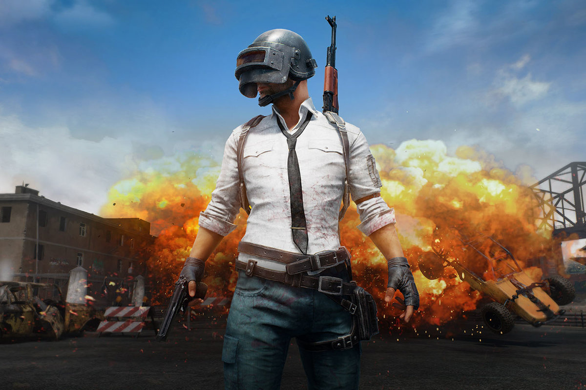

PUBG

PUBG is a player versus player shooter game in which up to one hundred
players fight in a battle royale, a type of large-scale last man
standing deathmatch where players fight to remain the last alive.
Players can choose to enter the match solo, duo, or with a small team
of up to four people. The last person or team alive wins the match.[2]
Each match starts with players parachuting from a plane onto one of
the four maps, with areas of approximately 8 × 8 kilometres (5.0 × 5.0
mi), 6 × 6 kilometres (3.7 × 3.7 mi), and 4 × 4 kilometres (2.5 × 2.5
mi) in size.[3] The plane's flight path across the map varies with
each round, requiring players to quickly determine the best time to
eject and parachute to the ground.[2] Players start with no gear
beyond customized clothing selections which do not affect gameplay.
Once they land, players can search buildings, ghost towns and other
sites to find weapons, vehicles, armor, and other equipment. These
items are procedurally distributed throughout the map at the start of
a match, with certain high-risk zones typically having better
equipment.[2] Killed players can be looted to acquire their gear as
well.[2] Players can opt to play either from the first-person or
third-person perspective, each having their own advantages and
disadvantages in combat and situational awareness; though
server-specific settings can be used to force all players into one
perspective to eliminate some advantages.[4]